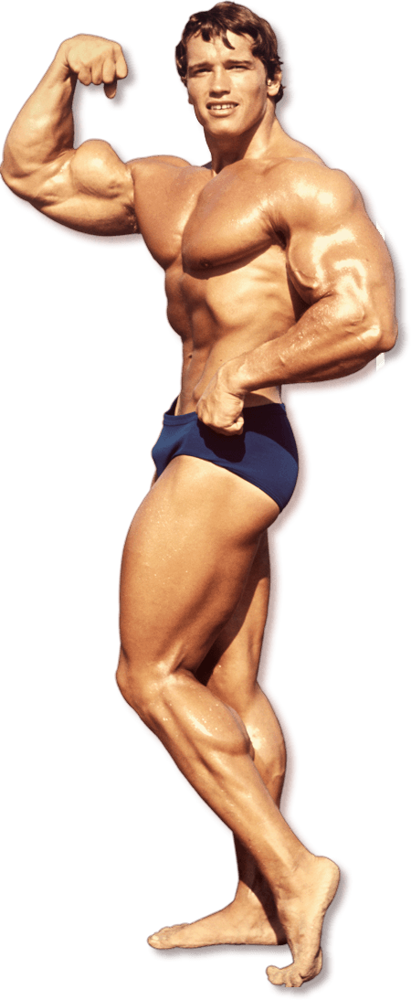
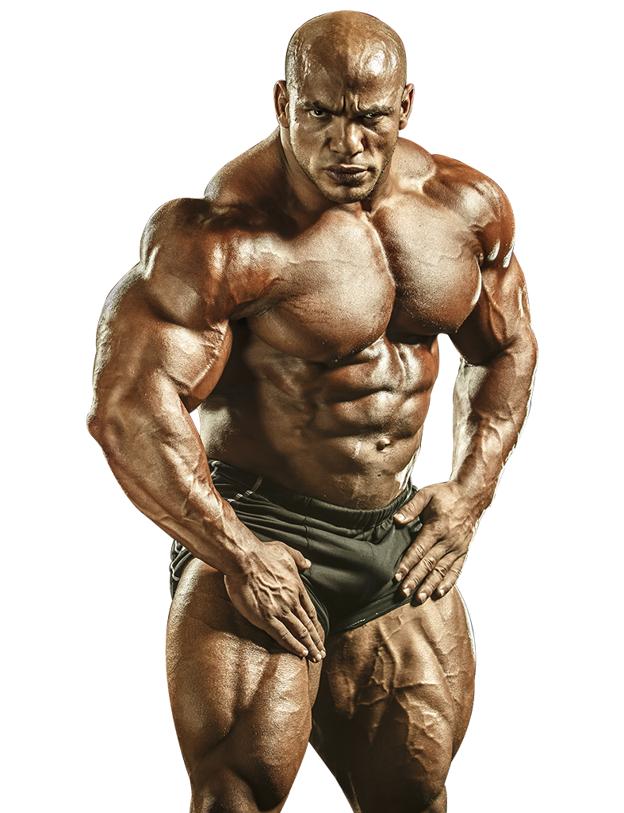
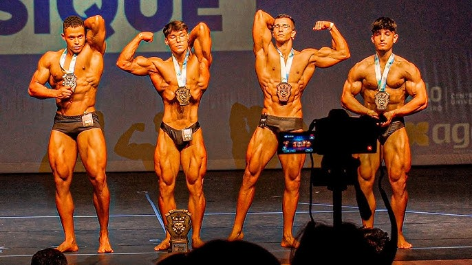
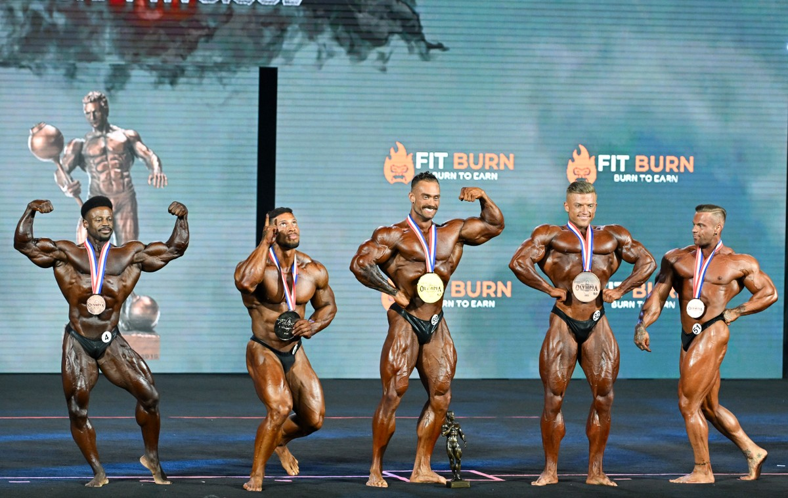
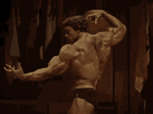

"A pior coisa que eu posso ser é igual a todo mundo. Eu odeio isso"
-Arnold Schwarzenegger
Body Building
O Bodybuilding, ou o fisiculturismo, tem uma história fascinante e antiga, quando gregos e romanos já praticavam exercícios físicos com o objetivo principal de desenvolver a força, mas também exaltando a estética.
O fisiculturismo moderno teve inicio no final do século XIX, com grande influencia de Eugen Sandow (Considerado o pai do Bodybuilding), o fisiculturismo moderno idealizava principalmente a estética, e a importância do treinamento físico e força. Sandow organizou a primeira grande competição de fisiculturismo em 1901, em Londres, marcando o início oficial do esporte. Entre as décadas de 1930 e 1970, o fisiculturismo passou por uma transformação significativa. Nos anos 1930 e 1940, as práticas ainda eram predominantemente naturais, com foco em treinamento intenso e dietas rigorosas. Porém, com o avanço da ciência, os anabolizantes começaram a ganhar popularidade a partir dos anos 1950, mudando drasticamente a forma como os fisiculturistas treinavam e competiam.
Foi também nesse período que Joe Weider fundou a International Federation of Bodybuilding & Fitness (IFBB), em 1946, que se tornaria uma das organizações mais importantes do esporte, criando competições como o Mr. Olympia.
Na década de 1970, o esporte atingiu um novo nível de visibilidade com a ascensão de Arnold Schwarzenegger, que popularizou o fisiculturismo globalmente, vencendo múltiplos títulos de Mr. Olympia e se tornando um ícone mundial através do documentário Pumping Iron. Arnold simbolizou a transição para uma era em que o fisiculturismo combinava espetáculo, estética e ciência.
O fisiculturismo atual é altamente profissionalizado, com competições globais como o Mr. Olympia e o Arnold Classic, além do uso controlado de anabolizantes. A partir dos anos 2000, o fisiculturismo passou por uma evolução significativa, com maior foco em tecnologia, ciência do treinamento e suplementação avançada. O uso de técnicas mais sofisticadas de preparação física e nutricional permitiu que os atletas alcançassem níveis extremos de definição e volume muscular. Além disso, a popularidade das redes sociais transformou a maneira como os fisiculturistas se conectam com seus fãs e patrocinadores, promovendo suas rotinas de treino e estilos de vida.
Novas categorias, como Men’s Physique e Classic Physique, ganharam destaque, oferecendo uma alternativa ao fisiculturismo tradicional de volume extremo. O esporte também se globalizou, com competidores de países como Brasil, Irã e Índia conquistando espaço nas competições de elite. Essa era moderna é marcada pela busca de maior equilíbrio entre estética e saúde, com um crescente debate sobre o uso de substâncias para performance.
 Natural e Livre
 O objetivo do fisiculturismo natural atualmente é promover o desenvolvimento muscular, força e estética de forma saudável, sem o uso de substâncias proibidas, como anabolizantes.
Focado em treinos intensos, alimentação adequada e uma suplementação, busca valorizar a disciplina e os resultados obtidos unicamente pelo esforço natural dos atletas, priorizando a saúde a longo prazo.
O objetivo do fisiculturismo livre atualmente é alcançar o máximo desenvolvimento muscular e estético, sem restrições quanto ao uso de anabolizantes ou substâncias para aprimorar o desempenho.
Atletas dessa categoria buscam atingir um físico extremo em termos de volume, definição e simetria, competindo em grandes eventos como o Mr. Olympia. O foco está no impacto visual e na superação dos limites do corpo humano.
Fatos sobre o fisiculturismo
- Os juízes em uma competição avaliam o equilíbrio entre os grupos musculares, garantindo que todas as partes do corpo estejam em harmonia, sem que uma área seja desproporcionalmente maior ou menor.
- A confiança e carisma do atleta no palco, assim como sua habilidade de realizar poses que destacam seus pontos fortes e ocultam pontos fracos, são aspectos cruciais para a avaliação.
- Durante competições, os fisiculturistas aplicam óleos corporais em suas peles para realçar a definição muscular sob as luzes do palco. Isso ajuda a destacar os contornos musculares e dar mais "profundidade" ao físico.
- O fisiculturismo cresceu exponencialmente, com competições e atletas de alto nível emergindo de todo o mundo, especialmente de países como Brasil, Irã e Kuwait.
- A primeira competição oficial de fisiculturismo feminino ocorreu apenas em 1978, com a popularização da categoria crescendo nas décadas seguintes.
- O fisiculturismo feminino vem crescendo rapidamente, com várias categorias, como Bikini e Figure, permitindo que mulheres com diferentes níveis de desenvolvimento muscular possam competir.